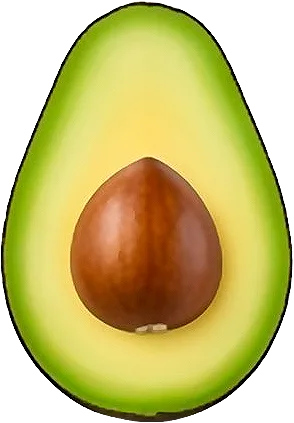

Avocat

Botaniquement une baie ; il mûrit seulement une fois cueilli.
- Saison : novembre, décembre, janvier, février, mars, avril
- Pleine saison : janvier, février, mars
- Famille botanique : Lauracées
Histoire
Originaire du Mexique et d’Amérique centrale, l’avocat était cultivé par les Aztèques, qui l’appelaient « ahuacatl ». Les conquistadors espagnols le rapportent en Europe au XVIᵉ siècle. Il ne devient courant en France qu’à partir des années 1960.
Origine et régions de production
L’avocat vendu en France en hiver vient surtout d’Espagne :
- Espagne (Andalousie)
- Israël
- Pérou
Bienfaits
L’avocat est un fruit riche et rassasiant :
- Bonnes graisses : Surtout des acides gras mono-insaturés, comme l’huile d’olive.
- Fibres : Il en contient beaucoup, ce qui le rend très rassasiant.
- Vitamines E, K et B9 : Présentes en bonne quantité.
- Énergétique : Environ 160 kcal/100 g : un fruit à part.
Variétés
- Hass : Peau granuleuse qui noircit en mûrissant.
- Fuerte : Peau lisse et verte, chair douce.
- Bacon : Peau fine, goût léger.
- Reed : Gros et rond, très crémeux.
Conserver sans gaspiller
- Conservation : À température ambiante pour mûrir, puis au frigo : 2 à 3 jours. Entamé, gardez le noyau et citronnez.
- Congélation : En purée, citronnée : jusqu’à 4 mois.
- Rien ne se jette : Un avocat trop mûr fait un guacamole, une mousse au chocolat ou un masque pour les cheveux. Le noyau peut germer dans l’eau.